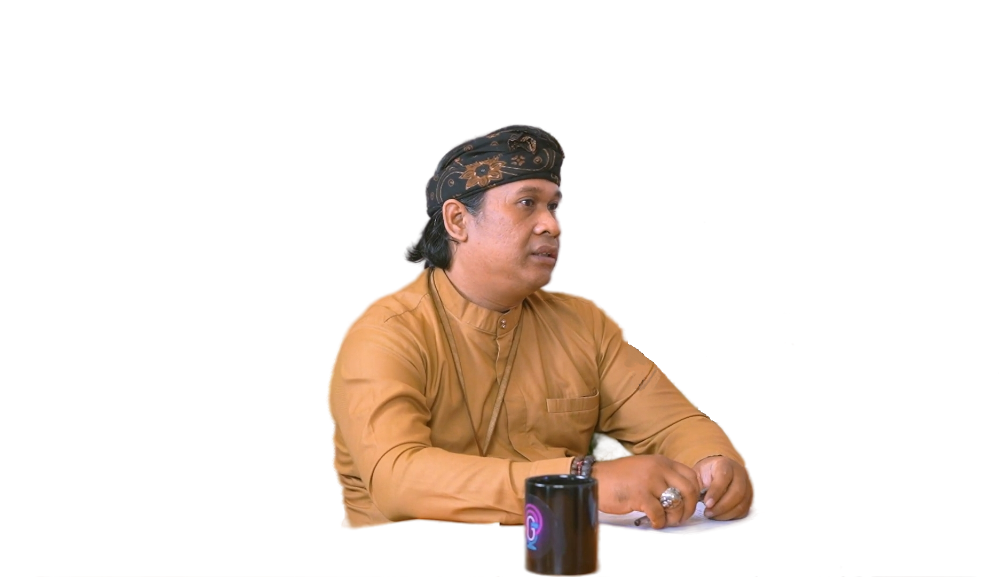
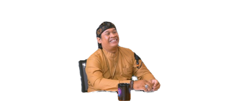

Mari kenal lebih dekat dengan
Bpk. Nyoman Hendra Adiwijaya S.Pd

Lahir di Singaraja, pada tanggal 14 - april - 1983. Dari lahir hingga
kuliah tinggal di Singaraja, tepat di bulan Juli - 2011, pindah
ke-denpasar untuk mencari kerja. Beliau memiliki buah hati pertamanya
pada 2012, yang kini menginjak jenjang Pendidikan pada kelas 5 SD.
Pada 2017, lahirlah anak beliau yang kedua dan sekarang, pada 2024,
beliau sedang menunggu kelahiran anaknya yang ketiga.
Beliau memulai karir sebagai seorang guru Agama Hindu pada tahun 2009
di SMK TI Bali Global Singaraja dengan prestasi yang beliau raih dalam
bidang eksekutif kesiswaan. Namun dengan perpindahan beliau di
Denpasar, kini beliau bekerja sebagai guru di SMK TI Bali Global
Denpasar.
Perjuangan beliau telah dimulai dari masa kecil, dengan dukungan orang
tua. Keluarga beliau termasuk keluarga yang sederhana, namun itu tidak
menghentikan beliau untuk meraih prestasi menjenjang Pendidikan.
Motivasi ini ditimbulkan oleh pesan ibu beliau, yang mengingatkan
bahwa harta benda bisa didapatkan, jikalah diingat pentingnya
Pendidikan dan pengetahuan.

Beliau mengingatkan kita semua, bahwa semua hal yang kita lakukan
akan musnah jika tidak didukung dengan fondasi yang kuat. Bangunilah
prestasi dan pengalamanmu diatas batu yang kuat, bukanlah pasir yang
mudah dihancurkan. Jika kita ingin sukses kita harus memiliki dasar
yang luas, seperti membangun rumah jika fondasi nya kuat kita mau
bangun berapa tingkat pun pasti bisa tapi jika fondasi nya tidak
kuat kita mau bangun satu tingkat pun akan roboh. Untuk anak-anak
yang sekarang berada di bangku SMK fokus dalam masa Pelajaran
seperti ikut pembinaan ekstra agar setiap ke sekolah tidak hanya
untuk belajar dan mengeluarkan buku/alat tulis saja, jadi ada sisi
dimana bisa bermain dan berkomunikasi dengan teman atau
bersosialisasi dengan teman.